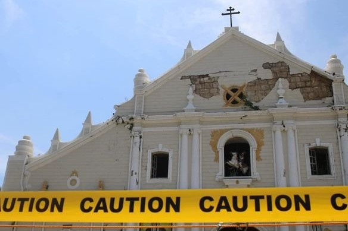
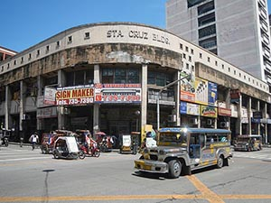
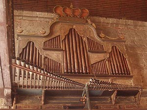

Banaue Rice Terraces at Risk from Climate Change and Tourism Shift
February 6, 2023
The Banaue Rice Terraces, a UNESCO World Heritage Site and one of the Philippines' most iconic landscapes, are under threat from climate change and the shift of locals to tourism jobs. According to a National Geographic report (2024), the terraces are at risk of collapse due to erratic weather patterns, soil erosion, and the abandonment of traditional farming practices. The terraces, often called the "Eighth Wonder of the World," have been cultivated for over 2,000 years by the Ifugao people. However, younger generations are increasingly leaving farming for more lucrative tourism jobs, leading to the neglect of the terraces. Rosie Frost (2023) highlighed that while tourism provides economic opportunities, it also poses risks to the terraces' preservation. Efforts are underway to promote sustainable tourism and encourage locals to return to farming. Organizations are working with the Ifugao community to implement adaptive strategies, such as reforestation and the use of traditional farming techniques, to ensure the terraces' survival for future generations.
Vigan Heritage Building Restoration After 2022 Earthquake
December 15, 2023
The historic city of Vigan, a UNESCO World Heritage Site known for its well-preserved Spanish colonial architecture, suffered significant damage during the July 2022 earthquake. According to Edgar Sembrano (2022), several heritage buildings, including the iconic Vigan Cathedral and ancestral houses, were affected. Restoration efforts are ongoing, with local authorities and heritage advocates working to preserve the city's historical integrity. The process involves careful documentation, the use of traditional materials, and collaboration with international conservation experts. The restoration of Vigan is seen as a model for other heritage sites facing similar challenges.
Benguet Center: A Lost Heritage for a Shopping Mall (2020)
June 20, 2020

The Benguet Center, a modernist architectural gem in Baguio City, was demolished in 2020 to make way for a shopping mall, sparking outrage among heritage advocates. Designed by National Artist for Architecture Leandro Locsin, the building was a symbol of post-war Filipino modernism and a testament to Locsin's innovative design philosophy. According to The Urban Roamer (2020), the Benguet Center was one of Locsin's lesser-known but significant works. Completed in the 1970s, the building featured a unique design that blended modernist principles with the natural landscape of Baguio. Its demolition was met with criticism from heritage advocates, who argued that the building's cultural and historical value was overlooked in favor of commercial development. The loss of the Benguet Center highlights the ongoing struggle to protect modernist architectural heritage in the Philippines. Advocates are calling for stronger enforcement of heritage protection laws and greater public awareness of the importance of preserving such structures.
The Jai Alai Building: A Lost Icon of Manila's Art Deco Era
January 15, 2023
The Jai Alai Building, once a symbol of Manila's vibrant cultural scene, was demolished in 2000 despite its architectural and historical value. Designed by Welton Becket, the building was a prime example of Art Deco architecture in the Philippines. Edgar Sembrano (2025) reflected on the loss of this cultural landmark, which hosted sports events, concerts, and social gatherings during its heyday. The demolition of the Jai Alai Building remains a stark reminder of the challenges faced by heritage conservationists in the Philippines.
Hospicio de San Jose: Binondo's Historic Orphanage Demolished
March 20, 2020
The Hospicio de San Jose Building in Binondo, Manila, a historic structure with deep cultural roots, was allowed to be demolished by the National Historical Commission of the Philippines (NHCP). The building, which served as an orphanage and hospital during the Spanish colonial period, was a significant part of Manila's history. Writer Sembrano (2020) reports that the decision sparked debates about the balance between development and heritage preservation. Many questioned the criteria used to determine a building's historical value, as the Hospicio de San Jose was not declared a heritage site despite its cultural significance.
Spanish-Era Cemetery Demolished for a Cockpit
March 21, 2019
A Spanish-era cemetery in Balaoan, La Union, was demolished in 2019 and replaced with a cockpit arena, sparking outrage among heritage advocates. The cemetery, which dated back to the colonial period, was a significant historical site that reflected the region's cultural and religious history. Southeast Asian Archaeology (2019) reports that the destruction of the cemetery highlights the ongoing struggle to protect lesser-known heritage sites in the Philippines. Advocates are calling for stronger enforcement of heritage laws to prevent similar losses in the future.
Sta. Cruz Building: A Lost Piece of Manila's Architectural Heritage
April 14, 2022
The Sta. Cruz Building, once a proud symbol of Manila’s rich architectural history, has been demolished, marking another loss in the struggle to preserve the city’s cultural heritage. Built in the early 20th century, this Neoclassical structure was a prominent feature of Manila’s bustling commercial district, reflecting the city’s vibrant past. Despite its historical significance, the Sta. Cruz Building fell victim to urban development pressures. According Rossete Adel(2022), the building was torn down to make way for modern commercial projects, a fate shared by many of Manila’s heritage structures. The demolition has sparked outrage among heritage advocates, who argue that the loss of such buildings erases important chapters of the city’s history. The Sta. Cruz Building’s demolition highlights the ongoing challenges of heritage conservation in the Philippines. Weak enforcement of heritage laws, lack of public awareness, and the prioritization of commercial interests over cultural preservation have made it difficult to save historic structures. Advocates continue to call for stronger policies and community involvement to protect Manila’s remaining heritage sites. The loss of the Sta. Cruz Building serves as a stark reminder of the urgent need to balance development with heritage conservation. As Manila continues to modernize, the question remains: how many more historic landmarks will be lost before meaningful action is taken?
The Missing 'Comfort Women' Statue: A Controversial Erasure
March 15, 2021
The disappearance of the 'Comfort Women' statue in Manila has sparked outrage, reigniting debates about Japan’s wartime legacy and the Philippines’ commitment to historical memory. Erected in 2017, the statue honored the thousands of women forced into sexual slavery by the Imperial Japanese Army during World War II. According to Ang See (2021), the statue’s removal is linked to diplomatic pressures from Japan, which has long sought to downplay its wartime actions. Human rights groups and survivors’ advocates, including Lila Pilipina, condemned the act as a betrayal of the victims’ struggle for justice. The controversy highlights the tension between preserving historical truth and maintaining diplomatic ties. Critics argue that the removal prioritizes Japan’s interests over the recognition of wartime atrocities. The missing statue serves as a reminder of the ongoing fight for justice and memory. Advocates are calling for its reinstatement and greater efforts to educate future generations about this dark chapter in history.
San Ignacio Church Ruins: A Silent Witness to Manila's Wartime Past
June 10, 2023
According to Ines (2023) the San Ignacio Church in Intramuros, Manila was once a stunning example of Filipino-Spanish architecture. Now lies in ruins after being destroyed during World War II. Built in the late 19th century, the church was known for its intricate wooden interiors and Baroque design. Despite its historical significance, the site has not been fully restored. Heritage advocates, including the Intramuros Administration, have called for its reconstruction to revive a piece of Manila's lost history. However, funding and logistical challenges have delayed the project. The ruins serve as a poignant reminder of the cultural losses suffered during the war.
Manila Metropolitan Theater: Reviving a Cultural Landmark
September 5, 2023
The Manila Metropolitan Theater, a National Cultural Treasure, has undergone a long and challenging restoration process. Built in 1931, the theater was a thriving cultural hub during its heyday, hosting operas, plays, and concerts. However, it fell into disrepair in the latter half of the 20th century. In 2018, the National Commission for Culture and the Arts (NCCA) began restoration efforts, aiming to bring the Art Deco masterpiece back to its former glory. While progress has been made, funding and maintenance remain ongoing challenges. The theater's revival symbolizes hope for the preservation of Manila's cultural heritage.
Las Piñas Bamboo Organ Church: A Testament to Filipino Craftsmanship
October 12, 2023
The Las Piñas Bamboo Organ Church, officially known as the St. Joseph Parish Church, is a unique heritage site that showcases the creativity and craftsmanship of Filipino artisans. Located in Las Piñas City, this 19th-century church is home to the world-famous Bamboo Organ, a one-of-a-kind musical instrument made almost entirely of bamboo. According to Flac(2011), the Bamboo Organ was constructed between 1816 and 1824 by Spanish priest Fr. Diego Cera. The organ features 902 bamboo pipes, alongside some metal pipes, and is considered a masterpiece of both musical and engineering innovation. Its construction reflects the resourcefulness of Filipino craftsmen, who utilized locally available materials to create an instrument of exceptional quality and sound. The church itself is a fine example of Spanish colonial architecture, with its adobe walls and intricate wooden details. Over the years, the Bamboo Organ has undergone several restorations to preserve its unique sound and structure. Today, it remains a centerpiece of cultural and religious events, including the annual International Bamboo Organ Festival, which attracts musicians and visitors from around the world. Despite its resilience, the Bamboo Organ Church faces challenges from environmental factors and urbanization. The Las Piñas City Government and local heritage groups have implemented measures to protect the site, including regular maintenance and community-led conservation efforts. The Bamboo Organ Church stands as a testament to Filipino ingenuity and the enduring legacy of the country’s cultural heritage. Its preservation is a reminder of the importance of safeguarding unique historical treasures for future generations.
Sta. Mesa Fire Station: Heritage Advocates Push for Reconstruction
January 18, 2024

The Sta. Mesa Fire Station, a 104-year-old heritage structure in Manila, has become the center of a heated debate between heritage conservationists and government agencies. The fire station, one of the oldest in the Philippines, was slated for demolition to make way for a modern facility. However, after public outcry, the Bureau of Fire Protection (BFP) National Capital Region (NCR) announced it would reconsider its plans. According to the Philippine Star (2024), the BFP initially proposed demolishing the fire station to construct a new building that would better serve the community’s needs. However, heritage advocates argued that the fire station’s historical and architectural value makes it worth preserving. The structure, built in 1920, is a rare example of early 20th-century American colonial architecture in Manila. In response to the backlash, the BFP-NCR stated that it is open to exploring alternatives, such as adaptive reuse, where the historic structure could be integrated into the new facility. This approach would allow the fire station to retain its heritage value while meeting modern operational requirements. The Sta. Mesa Fire Station case highlights the ongoing tension between development and heritage conservation in the Philippines. Advocates hope that this reconsideration will set a precedent for preserving other historic structures facing similar threats.